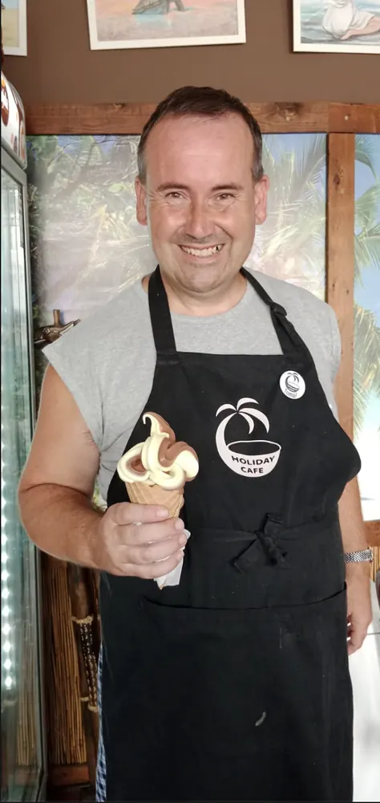

Tomáš
Tomáš je bousovský rodák, který vloni oslavil významné kulaté životní jubileum, hádejte jaké? 🙂 Je to muž s velkým M, který dokáže jako jeden z mála nezištně ocenit krásu ženy. Miluje psy a také plavání. V létě pravidelně navštěvuje místní koupaliště. Má rád lidi, hudbu, tanec a společnost, proto nechybí na žádné týmové akci. Jeho úsměv je nakažlivý. Zamilujete si ho pro jeho bezprostřednost.